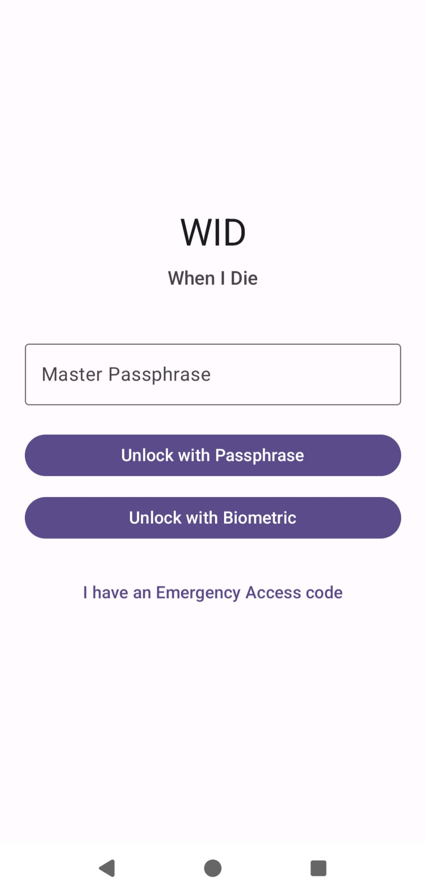
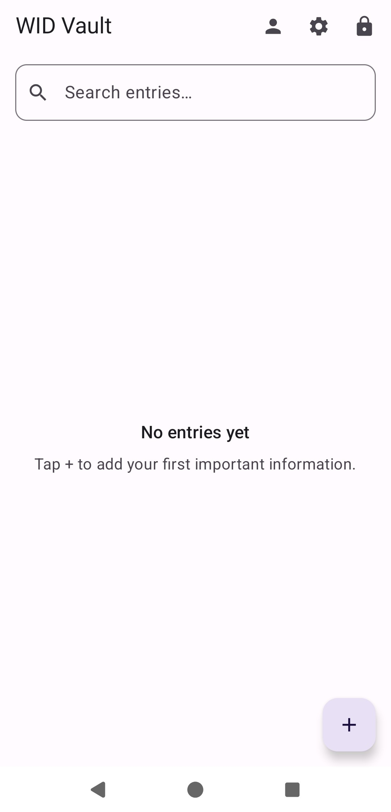
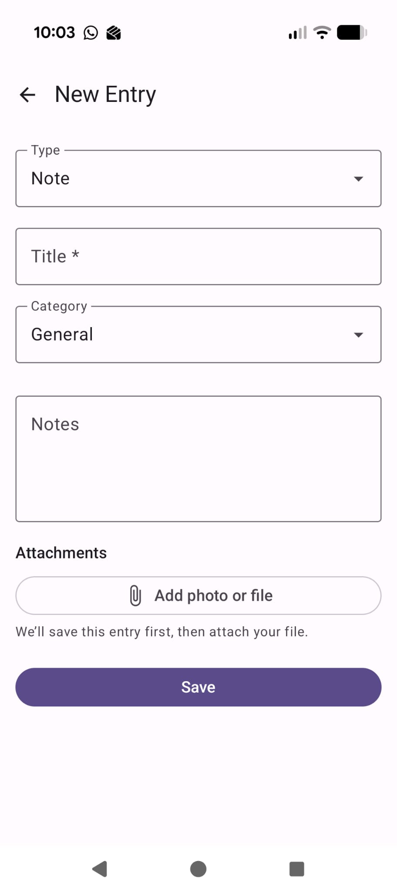
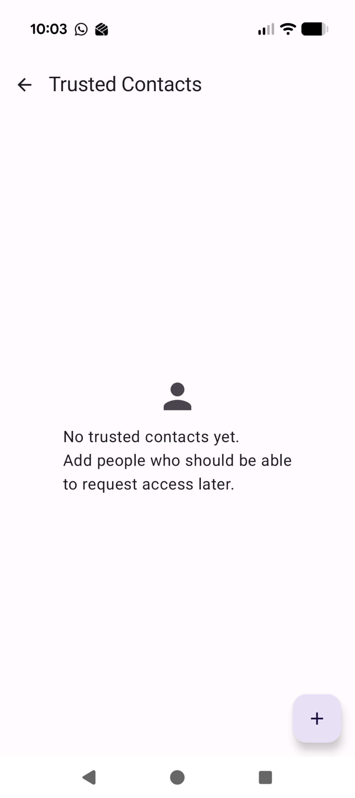
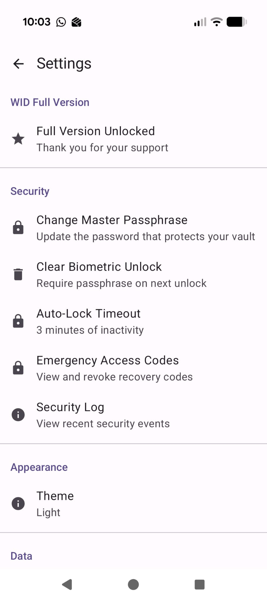

WID – Beta Tester Notes
Thank you for helping test WID (When I Die). Your feedback catches problems before a wider release.
What WID is
WID is an offline encrypted vault for information your loved ones might need later (accounts, passwords, notes, documents). Data stays on your device. There is no WID cloud account in this beta.
Positioning: the offline vault that holds what matters when you can’t explain it yourself.
Before you start
-
Use a test passphrase you will not forget — or write it down offline.
If you lose the master passphrase, the vault cannot be recovered. We cannot reset it. - Prefer a real phone (not only an emulator), especially for biometric unlock.
- This is beta software: expect rough edges. Do not store your only copy of critical real-life secrets until you are comfortable with backup/export behaviour.
- Uninstalling or clearing app data deletes the local vault. Export a backup first if you care about the data (full version / premium flag required for backup in the current build).
How to install
- You will receive a link from Google Play Internal testing (or an APK from the developer).
- Join the test with the Google account the developer invited.
- Install WID, open it, complete onboarding, and create your vault.
If the store page is not visible, ensure you accepted the internal testing invitation email/link.
Screenshots
Visual guide to the main screens. Use dummy data only — never real passwords or recovery codes. If an image is missing, the checklist below still applies.





Please exercise these flows
Must test
| Flow | What to do |
|---|---|
| First run | Onboarding → create master passphrase → land in empty vault |
| Entries | Create at least one of each type: Note, Password, Account, Contact, Document |
| Categories / search | Assign categories, search by title |
| Lock / unlock | Lock from the toolbar; unlock with passphrase |
| Biometric | Unlock once with passphrase, then try biometric (if device supports it) |
| Auto-lock | Switch away from the app; confirm it locks when you return (per your timeout setting) |
| Trusted contact | Add a contact; note free-tier limits if you hit them |
| Emergency code | Generate a recovery code; copy/share kit if available |
| Emergency unlock | On unlock screen use “I have an Emergency Access code”; confirm waiting period behaviour (use 0 hours on a test contact if you need a quick check) |
| Theme | Settings → Light / Dark / System; confirm nav buttons stay visible |
| Attachments | Add a small photo/file to an entry; open it; confirm size limit messaging if you try a large file |
Please test if enabled on your build
| Flow | What to do |
|---|---|
| Premium / upgrade | Open upgrade screen; if a test unlock is enabled, try backup export + import |
| Backup | Export .wid file → change or clear data only if acceptable → import and confirm replace behaviour |
| Security log | Unlock, lock, change a setting; open Settings → Security Log |
Free tier limits (expected)
- Limited trusted contacts
- Limited active emergency codes
- Backup may require full version
- Attachment max size smaller on free (e.g. 5 MB vs 15 MB)
Hitting a limit should show an upgrade prompt, not a crash.
How to report a bug
Send a short report to: [INSERT CONTACT EMAIL]
Include:
- Device – model + Android version
- App version – from Settings → About (or Play listing)
- Steps – what you did, in order
- Expected vs actual – what should have happened vs what did
- Screenshots or screen recording if useful
- Can you reproduce it? Always / sometimes / once
Subject line example:
[WID Beta] Crash on emergency unlock – Pixel 8 / Android 15
Known product truths (not bugs)
- Lost passphrase ⇒ no recovery
- Emergency access needs the code and the app/data on a device
- Import backup replaces vault entries (does not merge)
- New entry attachments: app may save the entry first, then attach
- Not a legal will or professional advice tool
Feedback we especially want
- Confusing copy or onboarding steps
- Anything that felt unsafe or unclear about emergency access
- Crashes, freezes, or “file is not a database” / unlock failures
- Whether you would trust this for family use — and what would increase that trust
Thank you
You are helping make a sensitive tool safer and clearer.
— WID team